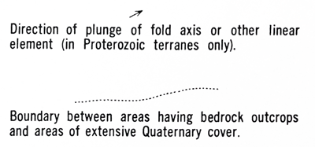

Discussion of common problems for NCGMP09 users
The goal is to capture information about who is responsible for every feature on the map.
We all recognize that we could do a better job conveying our geologic lingo to the general public. Let's do something about it by simply providing a Glossary of terms that we've used.
Geology has a very rich and robust language associated with it. As Geologists, we take a lot of this vocabulary for granted. Sometimes, that's fine; we all know what a contact is. However in other situations, the terms are more vaguely defined. We may use the same words and mean different things between ourselves. Furthermore, much of the vocabulary is completely foreign to people who are not geologists. It is for these reasons that we see utility in explicitly defining our terminology.
How do you determine what needs to be defined and what does not? We have to draw a line somewhere, and NCGMP09 draws it like this:
You must define the terms you use to define the "types" of any features that are on the map.
contact, fault, dike, bedding orienations, and paleocurrent directions. These terms must be defined in the Glossary table.Most Geologists are very comfortable defining the map, or rock units that are protrayed as colored areas on the map. We're accustomed to writing detailed descriptions of what those rocks look like. However, explicitly defining line and point types seems to move outside of some geologists' comfort zone. It is worth realizing, that defining these types is not a new workflow; you are simply presenting your paper map's symbol legend in the database. This one, for example, is taken from a map made in 1970. These are perfectly valid Glossary entries.
You must define the terms you use to convey "confidence" in a measurement or observation.
It is very likely that you will just use and re-use the termscertain,questionable, andunspecifiedover and over again. Fortunately, then, you only need to provide a definition of those terms once, and can adjust as needed.
There are a lot of existing vocabularies that have been developed for Geology. You can reuse those terms, as long as those vocabularies are accessible.
Many pre-existing vocabularies will provide their own unique identifiers for each well-defined term they contain. Use these identifiers in the Glossary table's Glossary_ID field to reference those other terms.
It is important that we find a way to communicate the uncertainties in our measurements and analysis.
Guidelines for identifying geologic units in the DescriptionOfMapUnits table.
Believe it or not, people will better understand our data if we can agree on some common terminology.